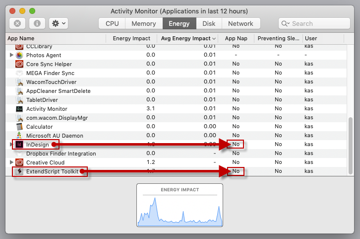
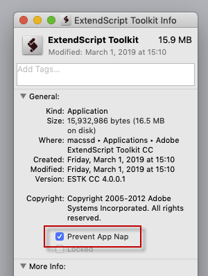

ExtendScript (plus InDesign) is slow to the point of not working
Warning: this happens on Macs only.
Problem: Since upgrading to Yosemite ExtendScript is sooooo slow. I literally watch the editor trying to keep up with me typing.
Solution: disable App Nap system-wide to speed things up.
In terminal defaults write:
defaults write NSGlobalDomain NSAppSleepDisabled -bool YES
or more lengthy: How to Disable App Nap Completely in Mac OS X
This could affect your battery life, but ExtendScript + InDesign debugging is working now again here.
Setting App Nap system wide to false is working great on OSX 10.10.3. ExtendScript Toolkit is finally working as expected.

Here is a slightly less drastic approach. This bash one-liner (which no doubt could be improved) will disable App Nap for all existing Adobe app domains:
while read domain; do defaults write "$domain" NSAppSleepDisabled -bool YES; done < <(defaults domains | awk 'BEGIN {FS=", "} {for(i=1;i<=NF;i++)print $i}' | grep -i adobe)
The source is here. Thanks grefel for the tip!
Alternatively, you can turn on the Prevent App Nap in the ESTK info dialog box:
